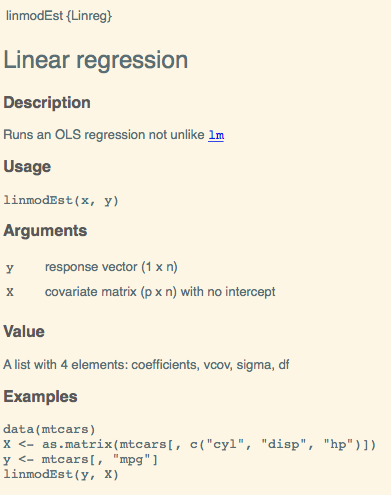

Chapter 3 Packages
We strongly recommand Wickham (2015).
We assume the following packages are installed:
install.packages(c("devtools", "roxygen2", "testthat", "knitr"))3.1 Why?
Organize your code
Distribute your code
Keep versions of your code
3.2 Package structure
- Folder hierarchy
NAMESPACE: package import / exportDESCRIPTION: metadataR/: R codeman/: object documentation (with short examples)tests/data/src/: compiled codevignettes/: manual-like documentationinst/: installed filesdemo/: longer examplesexec,po,tools
3.3 Building steps
R CMD buildR CMD INSTALLR CMD check
3.3.1 R CMD build
R CMD build --helpBuild R packages from package sources in the directories specified by ‘pkgdirs’
3.3.2 R CMD INSTALL
R CMD INSTALL --helpInstall the add-on packages specified by pkgs. The elements of pkgs can be relative or absolute paths to directories with the package sources, or to gzipped package ‘tar’ archives. The library tree to install to can be specified via ‘–library’. By default, packages are installed in the library tree rooted at the first directory in .libPaths() for an R session run in the current environment.
3.3.3 R CMD check
R CMD check --helphttp://r-pkgs.had.co.nz/check.html
Check R packages from package sources, which can be directories or package ‘tar’ archives with extension ‘.tar.gz’, ‘.tar.bz2’, ‘.tar.xz’ or ‘.tgz’.
A variety of diagnostic checks on directory structure, index and control files are performed. The package is installed into the log directory and production of the package PDF manual is tested. All examples and tests provided by the package are tested to see if they run successfully. By default code in the vignettes is tested, as is re-building the vignette PDFs.
3.3.4 Building steps with devtools
devtools::builddevtools::installdevtools::checkand many others:
load_all,document,test,run_examples, …
3.4 Create an R package
3.4.1 utils::package.skeleton
package.skeleton() # "in "clean" session ("anRpackage")
package.skeleton("pkgname") # in "clean" session
set.seed(02138)
f <- function(x, y) x+y
g <- function(x, y) x-y
d <- data.frame(a = 1, b = 2)
e <- rnorm(1000)
package.skeleton(list = c("f","g","d","e"), name = "pkgname")3.4.2 devtools::create
devtools::create("path/to/package/pkgname")Also from RStudio (`File -> New Project’).
3.4.3 Submit to CRAN

Figure 3.1: Submitting to CRAN. It’s not that bad…
Reading: http://r-pkgs.had.co.nz/release.html
3.5 R packages on GitHub
Reading: http://r-pkgs.had.co.nz/git.html
Version control
Website, wiki, project management
Easy install:
install_githubfromdevtoolsCollaboration
Issue tracking
3.5.0.1 RStudio and GitHub integration
Figure 3.2: Create a new Linreg repository on GitHub

Figure 3.3: Create a new project in RStudio
Figure 3.4: Select R package

Figure 3.5: Create the Linreg R package as a Git repository

Figure 3.6: Automatically created files

Figure 3.7: Build tab in RStudio

Figure 3.8: Github webpage
Figure 3.9: Open a terminal
Command line
# git init # already run when creating package with RStudio
git add *
git commit -m "First commit"
git remote add origin https://github.com/cchoirat/Linreg
git push -u origin master
Figure 3.10: Github webpage is updated
3.5.1 .gitignore
RStudio default
.Rproj.user
.Rhistory
.RDataGitHub default
# History files
.Rhistory
.Rapp.history
# Example code in package build process
*-Ex.R
# RStudio files
.Rproj.user/
# produced vignettes
vignettes/*.html
vignettes/*.pdf3.6 RStudio projects
.Rprojfile extension, in our exampleLinreg.Rproj- A project has its own:
- R session
- .Rprofile (e.g., to customize startup environment)
- .Rhistory
Default working directory is project directory
Keeps track of project-specific recent files
3.6.1 Project options
Version: 1.0
RestoreWorkspace: Default
SaveWorkspace: Default
AlwaysSaveHistory: Default
EnableCodeIndexing: Yes
UseSpacesForTab: Yes
NumSpacesForTab: 2
Encoding: UTF-8
RnwWeave: knitr
LaTeX: pdfLaTeX
AutoAppendNewline: Yes
StripTrailingWhitespace: Yes
BuildType: Package
PackageUseDevtools: Yes
PackageInstallArgs: --no-multiarch --with-keep.source3.6.2 Package documentation
Functions and methods
- Vignettes
knitr
3.7 Package workflow example
Creating R Packages: A Tutorial (Friedrich Leisch, 2009)
Our example is adapted from https://cran.r-project.org/doc/contrib/Leisch-CreatingPackages.pdf.
3.7.1 Add linreg.R to R/ directory
linmodEst <- function(x, y) {
## CC: crossprod or a QR decomposition (as in the original version) are more efficient
coef <- solve(t(x) %*% x) %*% t(x) %*% y
print(coef)
## degrees of freedom and standard deviation of residuals
df <- nrow(x) - ncol(x)
sigma2 <- sum((y - x %*% coef) ^ 2) / df
## compute sigma^2 * (x’x)^-1
vcov <- sigma2 * solve(t(x) %*% x)
colnames(vcov) <- rownames(vcov) <- colnames(x)
list(
coefficients = coef,
vcov = vcov,
sigma = sqrt(sigma2),
df = df
)
}3.7.2 Run our function
data(cats, package = "MASS")
linmodEst(cbind(1, cats$Bwt), cats$Hwt)## [,1]
## [1,] -0.3566624
## [2,] 4.0340627## $coefficients
## [,1]
## [1,] -0.3566624
## [2,] 4.0340627
##
## $vcov
## [,1] [,2]
## [1,] 0.4792475 -0.17058197
## [2,] -0.1705820 0.06263081
##
## $sigma
## [1] 1.452373
##
## $df
## [1] 142We can compare the output with lm.
lm1 <- lm(Hwt ~ Bwt, data = cats)
lm1##
## Call:
## lm(formula = Hwt ~ Bwt, data = cats)
##
## Coefficients:
## (Intercept) Bwt
## -0.3567 4.0341coef(lm1)## (Intercept) Bwt
## -0.3566624 4.0340627vcov(lm1)## (Intercept) Bwt
## (Intercept) 0.4792475 -0.17058197
## Bwt -0.1705820 0.06263081summary(lm1)$sigma## [1] 1.4523733.7.3 Add ROxygen2 documentation
Reading: http://kbroman.org/pkg_primer/pages/docs.html
#' Linear regression
#'
#' Runs an OLS regression not unlike \code{\link{lm}}
#'
#' @param y response vector (1 x n)
#' @param X covariate matrix (p x n) with no intercept
#'
#' @return A list with 4 elements: coefficients, vcov, sigma, df
#'
#' @examples
#' data(mtcars)
#' X <- as.matrix(mtcars[, c("cyl", "disp", "hp")])
#' y <- mtcars[, "mpg"]
#' linmodEst(y, X)
#'
#' @export
#'
linmodEst <- function(x, y) {
## CC: crossprod or a QR decomposition (as in the original version) are more efficient
coef <- solve(t(x) %*% x) %*% t(x) %*% y
print(coef)
## degrees of freedom and standard deviation of residuals
df <- nrow(x) - ncol(x)
sigma2 <- sum((y - x %*% coef) ^ 2) / df
## compute sigma^2 * (x’x)^-1
vcov <- sigma2 * solve(t(x) %*% x)
colnames(vcov) <- rownames(vcov) <- colnames(x)
list(
coefficients = coef,
vcov = vcov,
sigma = sqrt(sigma2),
df = df
)
}3.7.4 Configure Build Tools

Figure 3.11: Roxygen options
3.7.5 man page
File `man/linmodEst.Rd contains:
% Generated by roxygen2: do not edit by hand
% Please edit documentation in R/linreg.R
\name{linmodEst}
\alias{linmodEst}
\title{Linear regression}
\usage{
linmodEst(x, y)
}
\arguments{
\item{y}{response vector (1 x n)}
\item{X}{covariate matrix (p x n) with no intercept}
}
\value{
A list with 4 elements: coefficients, vcov, sigma, df
}
\description{
Runs an OLS regression not unlike \code{\link{lm}}
}
\examples{
data(mtcars)
X <- as.matrix(mtcars[, c("cyl", "disp", "hp")])
y <- mtcars[, "mpg"]
linmodEst(y, X)
}3.7.6 Formatted output

3.7.7 DESCRIPTION
Reading: http://r-pkgs.had.co.nz/description.html
Package: Linreg
Type: Package
Title: What the Package Does (Title Case)
Version: 0.1.0
Author: Who wrote it
Maintainer: The package maintainer <yourself@somewhere.net>
Description: More about what it does (maybe more than one line)
Use four spaces when indenting paragraphs within the Description.
License: What license is it under?
Encoding: UTF-8
LazyData: true
RoxygenNote: 6.0.13.7.8 NAMESPACE
Reading: http://r-pkgs.had.co.nz/namespace.html, in particular Imports vs Suggests
export’s automatically generated when parsing ROxygen2 snippets
export(linmodEst)
A scary hack
A scary tree
3.7.9 S3 basics
Reading: http://adv-r.had.co.nz/S3.html
hello <- function() {
s <- "Hello World!"
class(s) <- "hi"
return(s)
}
hello()## [1] "Hello World!"
## attr(,"class")
## [1] "hi"print.hi <- function(...) {
print("Surprise!")
}
hello()## [1] "Surprise!"3.7.10 S3 and S4 generics
Reading: http://adv-r.had.co.nz/S4.html
linmod <- function(x, ...)
UseMethod("linmod")linmod.default <- function(x, y, ...) {
x <- as.matrix(x)
y <- as.numeric(y)
est <- linmodEst(x, y)
est$fitted.values <- as.vector(x %*% est$coefficients)
est$residuals <- y - est$fitted.values
est$call <- match.call()
class(est) <- "linmod"
return(est)
}3.7.11 print
print.linmod <- function(x, ...) {
cat("Call:\n")
print(x$call)
cat("\nCoefficients:\n")
print(x$coefficients)
}x <- cbind(Const = 1, Bwt = cats$Bwt)
y <- cats$Hw
mod1 <- linmod(x, y)## [,1]
## Const -0.3566624
## Bwt 4.0340627mod1## Call:
## linmod.default(x = x, y = y)
##
## Coefficients:
## [,1]
## Const -0.3566624
## Bwt 4.03406273.7.12 Other methods
summary.linmodprint.summary.linmodpredict.linmodplot.linmodcoef.linmod,vcov.linmod, …
coef.linmod and vcov.linmod methods.
3.7.13 Formulas and model frames
Reading: http://genomicsclass.github.io/book/pages/expressing_design_formula.html
model.frame(a generic function) and its methods return a data.frame with the variables needed to use formula and any … arguments.
model.matrixcreates a design (or model) matrix, e.g., by expanding factors to a set of dummy variables (depending on the contrasts) and expanding interactions similarly.
model.responsereturns the response of a model frame passed as optional arguments to model.frame.
model.extract?
linmod.formula <- function(formula, data = list(), ...) {
mf <- model.frame(formula = formula, data = data)
x <- model.matrix(attr(mf, "terms"), data = mf)
y <- model.response(mf)
est <- linmod.default(x, y, ...)
est$call <- match.call()
est$formula <- formula
return(est)
}linmod(Hwt ~ - 1 + Bwt * Sex, data = cats)Call:
linmod.formula(formula = Hwt ~ -1 + Bwt * Sex, data = cats)
Coefficients:
Bwt SexF SexM Bwt:SexM
2.636414 2.981312 -1.184088 1.676265 3.8 Unit testing
3.8.1 Unit tests and testthat
Reading: http://r-pkgs.had.co.nz/tests.html
In package directory:
devtools::use_testthat()pre-populates test/testthat/
Test files should start with test to be processed.
3.8.2 test_coef.R
data(cats, package = "MASS")
l1 <- linmod(Hwt ~ Bwt * Sex, data = cats)
l2 <- lm(Hwt ~ Bwt * Sex, data = cats)
test_that("same estimated coefficients as lm function", {
expect_equal(round(l1$coefficients, 3), round(l2$coefficients, 3))
})> devtools::test()
Loading Linreg
Loading required package: testthat
Testing Linreg
.
DONE =========================================================================================3.9 Continuous integration
Reading: http://r-pkgs.had.co.nz/check.html#travis
Website: https://travis-ci.org/
First step is to create a Travis account and link it to you GitHub account.

Travis will list all your public GitHub repositories for you to select the ones you want to test.
Calling
devtools::use_coverage(pkg = ".", type = c("codecov"))creates the .travis.yml file:
# R for travis: see documentation at https://docs.travis-ci.com/user/languages/r
language: R
sudo: false
cache: packagesand pushing Linreg code to GitHub will automatically triggers a Travis build… which fails!
To be continued…
3.10 Code coverage
Reading: https://walczak.org/2017/06/how-to-add-code-coverage-codecov-to-your-r-package/
Website: https://codecov.io/
Like Travis, codecov has to be linked to a GitHub account:
devtools::use_coverage(pkg = ".", type = c("codecov"))creates the codecov.yml file:
comment: falseA call to
covr::codecov(token = "YOUR_TOKEN")will give you code coverage information:

3.11 Back to GitHub
Badges can be added to README.md:
<!--- Badges ----->
[](https://travis-ci.org/cchoirat/Linreg)
[](https://codecov.io/gh/cchoirat/Linreg)
## `Linreg` package template
Based on "Creating R Packages: A Tutorial" (Friedrich Leisch, 2009)
- https://cran.r-project.org/doc/contrib/Leisch-CreatingPackages.pdfare are automatically displayed on GitHub:
3.12 Vignettes
Reading: http://r-pkgs.had.co.nz/vignettes.html
Reading: http://kbroman.org/pkg_primer/pages/vignettes.html
Even if all the functions and datasets of your package are documented, it is still useful to have a more detailed illustation on how to use your package. A vignette is the right place to explain a worflow and a statistical method.
Running:
devtools::use_vignette("my-linear-regression")creates a vignettes folder and provide a template in RMarkdown format my-linear-regression.Rmd:
https://github.com/cchoirat/Linreg/blob/master/vignettes/my-linear-regression.Rmd
It also indicates in DESCRIPTION that vignettes should be built with knitr.
VignetteBuilder: knitrThe vignette is built into a HTML document with
devtools::build_vignettes()Building Linreg vignettes
Moving my-linear-regression.html, my-linear-regression.R to inst/doc/
Copying my-linear-regression.Rmd to inst/doc/The vignette is accessible with
vignette("my-linear-regression")
vignette("my-linear-regression", package = "Linreg")
References
Wickham, H. 2015. R Packages. 1st ed. O’Reilly Media, Inc.